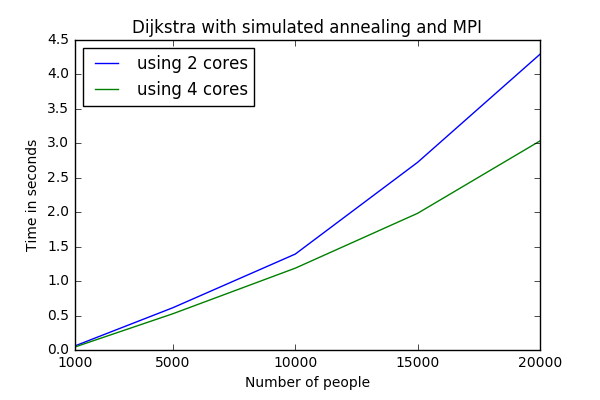
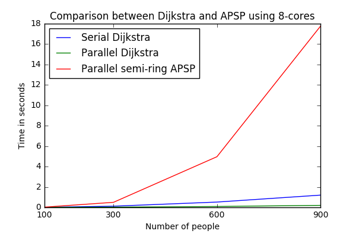

Sonu Mehta, Tomas Gudmundsson, Dali Moghimi
Introduction and Motivation
At present, the modern buildings tend to be large-scale, multifunctional and complex with multiple exits.
Emergency evacuation, which drives a mass movement of people disasterimpacted
areas to safe areas, has been a complex problem ever since. If the evacuation can’t be effectively finished in the
limited time, it will result the unnecessary casualties. So, setting up a safe and effective evacuation method is vital.
In this project, we discuss about the evacuation strategy of a building by using shortest path algorithm.
Problem Description
The objective is to find the most efficient and expedient routes to the building's exits for evacuees in an
emergency situation.Concretely, we start with the floor plan of a building. This plan is converted into a weighted, undirected
graph with nodes equal to the sum of the number of occupants and exits available for each particular floor.
The graph is a connected graph with edge weights representing the distance between two nodes. In the case of
an emergency evacuation, the goal is to assign to each person the nearest exit whilst taking into account the
congestion that may occur at these exits. Each exit has a specified capacity that must not be exceeded in order
to safely evacuate the occupants. The algorithm is expected to output the optimal or near optimal assignment
of evacuees to the exits such that the total cost is minimized. The total cost in this problem is defined as
the sum of the distances of each person from their assigned exit and the penalty incurred for exceeding the
capacity for a particular exit.
Algorithms Used
1. Dijkstra Algorithm for shortest path + Simulated Annealing.
We use Dijkstra Algorithm to find the shortest path to each exit from all the floor locations(representing an occupant).
Once we have the distance to each exit for every occupant, we assign the nearest exit
to each person and calculate the cost of the assignment. For now, we will assume that the congestion can only
occur at the exits and that the edges do not have flow constraints, i.e., any number of occupants can pass freely
along an edge at any given point in time.
Once the assignments to the nearest exits for each occupant are complete, we use simulated annealing to find
the minimum cost configuration. After each iteration of the SA algorithm, we generate a new configuration
by changing the exit assignment of one the occupants at random while the temperature is gradually reduced
to zero. If the new assignment has a lower cost than the older assignment, the algorithm will accept the new
configuration and if the cost is higher, the algorithm will only accept the new configuration with probability
= exp((newCost - oldCost))/T where T is the temperature. The algorithm converges to a minimum cost configuration
as the temperature is reduced the exit assignment of each person is the output of the program.
Parallelization:
The above algorithm is sequential and calculates the shorted distance using Dijkstra one by one. As the graphs become larger,
the computation time increases which reduces the purpose of the algorithm.
To speed up the process, we use hybrid approach MPI+OpenMP to parallelize the algorithm.
Since Dijkstra from one exit is not affected by another exit, we parallelize the algorithm by using OpenMP to calculate the
shortest distance from all exits in parallel. Then we assign the nearest exit to each person and come up with an initial
configuration. After that, for simulated annealing, instead of starting with 1 resultant configuration from Dijkstra,
we start with multiple initial configurations in parallel (using MPI). We run 10 epochs for each process in parallel for
each temperature so that the process reaches equilibrium at that temperature. Then we synchronize all the processes until
they reach equilibrium and then they communicate with each other the best possible configuration at that temperature.
This above approach repeats at each temperature until at the end we have the best solution from all the processes.

2.APSP Algorithm + Simulated Annealing
In order to get performance benchmarks for the building evacuation simulation using Dijkstra we decided to implement an recursive parallel tropical semi-ring all-pair-shortest-path (APSP) algorithm based on the Floyd-Warshall algorithm. We only parallelized the matrix calculations, since it's very difficult to parallelize the recursive calls in the algorithm. As the plot below shows this algorithm is much slower than the Dijkstra's algorithm for several reasons. First, the asymptotic complexity is higher, O(N^3) compared to (O(Nlog(N))) for dijkstra. Secondly, the recursion in the APSP algorithm is expensive and slows it down. Below are the performance results when this algorithm was run against the serial and parallel version of Dijkstra. It can be seen that even the serial version of Dijkstra outperforms this algorithm. For this algorithm to get closer to Dijkstra we would need to simulate a building evacuation with many more exits, but the highest number of exits we considered was 50.

Observations and Performance Evaluation
To evaluate the accuracy of the model, we used a few small randomly generated weighted graphs and manually evaluated
the exit assignments for each occupant before and after simulated annealing(SA). We observe that the exit assignment after SA
is the lowest cost assignment and the exits assigned to each person are closest taking into account the congestion.
We evaluated the performance of the model by calculating execution time for serial and parallel run
by changing the following parameters:
- No. of nodes + edges + exits
- No. of cores to be used for OpenMP
- No. of compute nodes to be used for MPI.
We observe that difference in execution time of serial and parallel implementation is not significant for graphs of
small size but, on increasing the number of nodes+edges+exits we achieve a better speedup (more plots are in the "Performance Plots" tab.
Similarly on increasing the no. of cores for OpenMP, the speedup is increased but if the no. of cores are more than exits, the speedup is not that significant.
Similarly for Simulated Annealing, increasing the number of processes not only speeds up the process but there is
an additional advantage. At each temperature, the processes communicate to get the best configurations amonsgt them and
then proceed from there to get the best possible solution at the end.